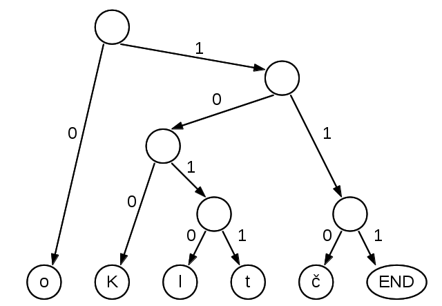

Úkolem je vytvořit sadu C/C++ funkcí, které dokáží dekomprimovat a komprimovat
vstupní soubor Huffmanovým kódem. Vzhledem k většímu rozsahu úlohy je potřeba
zvládnout pouze část dekomprese, komprimace je nepovinná za bonusové body.
Huffmanův kód je princip komprese dat, který využívá statistických vlastností ukládaných dat.
V typických souborech jsou různé hodnoty (např. znaky) zastoupeny s velmi nerovnoměrnou
četností. Například mezery jsou v typickém textu velmi časté, naopak znak ř bude málo
frekventovaný. Huffmanův kód zpracuje analýzu četnosti výskytu jednotlivých znaků a podle
četností přidělí jednotlivým znakům kódy. Kódy mají různou délku, typicky 1 až desítky bitů.
Často se vyskytující znaky dostanou kódy kratší, málo časté znaky dostanou kódy delší.
To v důsledku vede k úspoře místa.
Zavedením různé délky kódů pro jednotlivé znaky se ale objeví jiný problém. Musíme být
schopni detekovat, kde kódovaný znak končí, tedy kolik bitů je potřeba načíst, abychom
znak správně dekódovali právě jeden znak. Pro fixní počet bitů na znak je to snadné. Např.
ASCII má 8 bitů/znak, tedy co bajt, to znak. UTF-8 je složitější, jeden znak zabírá 1 až 4
bajty a je potřeba kontrolovat strukturu čtených bajtů, aby kód čtoucí UTF-8 bajty správně
seskupil. U Huffmanova kódu je to ještě obtížnější. Huffmanův kód je kódem prefixovým, tedy žádný
kód není prefixem jiného kódu. Pokud například mezeru kódujeme dvojicí bitů 00, pak posloupnosti
001, 000, 0001, ... nejsou obsazené žádným jiným kódem. Tím je garantována jednoznačnost
dekódování.
Druhým problémem je doplnění na celé bajty a správná detekce posledního znaku při
dekódování. Protože kódy mohou mít různé délky, nemusí být počet bitů po komprimaci násobkem 8.
Tedy v posledním bajtu mohou být některé bity nevyužité. V souborech ale musíme pracovat
s celými bajty, tedy zbývající bity musíme nějakými nulami nebo jedničkami doplnit. Při
ukládání to není problém (prostě něco přidáme), ale při načítání bychom takto přidané bity
navíc mohli dekódovat jako další znaky navíc. Proto při kódování přidáme na konec souboru
zarážku - speciální znak navíc. Tento znak bude mít hodnotu mimo rozsah používaný legálními
znaky (např. pro UNICODE by byl 1114112 = 1048576+65536). Pokud na takový kód narazíme při
načítání souboru, víme, že tento znak a vše, co následuje, máme ignorovat.
Kódování a dekódování si ukážeme na příkladech:
vstupní soubor obsahuje 7 znaků (8 bajtů v UTF-8)
Kolotoč
Pro tento soubor by Huffmanův kód mohl být například:
K 100
o 0
l 1010
t 1011
č 110
END 111
Tedy po zakódování dostaneme posloupnost bitů:
K o l o t o č END
100 0 1010 0 1011 0 110 111
Tato posloupnost bitů seskupena do osmic bitů:
10001010 01011011 0111xxxx
Nepoužité bity x vyplněné např. nulami:
10001010 01011011 01110000
Tyto bity přepsané v šestnáctkové soustavě jako 3 bajty:
8a 5b 70
Komprimace zkrátila původních 8 bajtů na 3, tedy na méně než 50%. Aby bylo možné
soubor dekomprimovat, je ale potřeba znát, jaký kód byl použit. Dekódovací tabulku
lze např. uložit na začátek souboru před vlastní datový obsah. Pro ukládání a dekódování se
hodí udržovat tabulku ve formě stromu. Pro ukázkový příklad je strom uveden na obrázku níže.

Takový strom lze do souboru uložit například průchodem pre-order.
Za každý navštívený uzel zapíšeme do souboru jeden bit. Vnitřní uzel
zapíšeme bitem 0, list zapíšeme jako bit 1 následovaný hodnotou kódovaného
znaku. Budeme uvažovat obecný případ, kde vstupní soubor je kódován v UTF-8, tedy
kód jednoho znaku je podle pravidel UTF-8 dlouhý 8 až 32 bitů. Kódování všech písmen
v ukázce bude 8-bitové, jedině znak č a speciální ukončovací kód END bude kódován více bajty.
Znak č má UNICODE kódovou pozici 0x10d a tedy je v UTF-8 kódován dvojicí bajtů: c4 8d. Zarážku END
budeme kódovat hodnotou 1114112 (dec) = 110000 (hex), ta by měla v UTF-8 podobu 4 bajtů: f4 90 80 80.
(UNICODE je omezen na kódové pozice 0 až 1114111, naše zarážka je o jednu pozici mimo, tedy nekoliduje
s žádným platným znakem. Lze ji zakódovat pomocí algoritmu UTF-8, ale takový kód pochopitelně
nereprezentuje platný znak.) Tedy ukázkový strom bude uložen jako:
Pre-order průchod stromem:
0 1 'o' 0 0 1 'K' 0 1 'l' 1 't' 0 1 'č' 1 'END' <bity kódovaného textu>
Náhrada znaků jejich UTF-8 kódy:
0 1 01101111 0 0 1 01001011 0 1 01101100 1 01110100 0 1 11000100 10001101
1 11110100 10010000 10000000 10000000 <bity kódovaného textu>
Seskupení bitů do bajtů:
01011011 11001010 01011010 11011001 01110100 01110001 00100011
01111110 10010010 00010000 00010000 000 <bity kódovaného textu>
Pro ukázkový text:
01011011 11001010 01011010 11011001 01110100 01110001 00100011
01111110 10010010 00010000 00010000 000 100 0 1010 0 1011 0 110 111
Pro ukázkový text (přeformátováno, doplněno nulami):
01011011 11001010 01011010 11011001 01110100 01110001 00100011
01111110 10010010 00010000 00010000 00010001 01001011 01101110
Přepis na bajty (14 bajtů):
5b ca 5a d9 74 71 23
7e 92 10 10 11 4b 6e
Tedy původní text o délce 8 bajtů se zkomprimuje na novou délku 14 bajtů.
Nárůst je ale dán pouze uložením kódovacího stromu, pro delší vstup by již
bylo dosaženo úspory.
Při dekompresi je potřeba nejprve načíst serializovaný kódovací strom.
Načítání je rekurzivní. Rekurzivní funkce čte jeden bit ze souboru. Pokud načte bit 0,
vytvoří vnitřní uzel a 2x se rekurzivně zavolá pro levý a pravý podstrom. Pokud načte bit 1,
načte ještě následující UTF-8 znak a vytvoří pro něj odpovídající listový uzel.
Huffmanův strom lze s výhodou použít i pro dekompresi. Po načtení stromu
stačí z komprimovaného souboru číst jednotlivé bity a podle hodnoty 0/1 procházet
strom vlevo/vpravo. Po dosažení listu máme dekódovaný jeden znak a začínáme znovu
od kořene.
Úkolem je realizovat dvě funkce s rozhraním níže. Obě funkce mají parametrem dvě
jména souborů: zdrojový a cílový. Funkce čtou zdrojový soubor a zapisují výsledek
komprimace/dekomprese do cílového souboru. Návratovou hodnotou obou funkcí je
příznak úspěchu (true) nebo chyby (false). Pokud se během požadované operace komprimace/dekomprese
cokoliv nepodaří (otevřít soubor / vytvořit soubor / číst zdroj / zapisovat cíl / nesprávný
formát dat / ...), funkce bude vracet hodnotu false.
Implementace dekomprese je snazší, referenční řešení má cca 200 zdrojových řádek.
Implementace funkce pro dekompresi je požadovaná, pokud nebude fungovat, neprojde program
závaznými testy. Funkce pro komprimaci je pracnější. Referenční řešení obou funkcí
má přibližně 500 zdrojových řádek. To je na domácí úlohu větší rozsah, proto je
tato část úlohy pouze volitelná za bodový bonus. Algoritmus konstrukce Huffmanova
kódu je popsán např. na Wikipedii.
Pokud se rozhodnete řešit pouze závaznou část, ponechte funkci pro komprimaci
podle ukázky a v jejím těle vždy vracejte hodnotu false.
Při implementaci máte k dispozici datové struktury z STL, viz ukázka. Struktury z STL
použít můžete, ale nemusíte. Pokud budete řešit pouze funkci pro dekompresi, patrně je
nevyužijete. STL datové struktury se hodí zejména pro implementaci komprimace.
#ifndef __PROGTEST__
#include <cstdio>
#include <cstdlib>
#include <cstring>
#include <string>
#include <iostream>
#include <fstream>
#include <map>
#include <vector>
#include <algorithm>
#include <set>
#include <queue>
#include <stdint.h>
using namespace std;
#endif /* __PROGTEST__ */
bool compressFile ( const char * inFile, const char * outFile )
{
// bonus, keep this dummy function body if not implemented
return false;
}
bool decompressFile ( const char * inFile, const char * outFile )
{
// mandatory, todo
}
#ifndef __PROGTEST__
int main ( int argc, char * argv [] )
{
// tests
return 0;
}
#endif /* __PROGTEST__ */
Poznámky:
- Pečlivě ošetřujte souborové operace. Testovací prostředí úmyslně testuje Vaši implementaci
pro soubory neexistující, nečitelné nebo soubory s nesprávným datovým obsahem.
- Celý program má pracovat se soubory, kde znaky jsou kódované pomocí UTF-8. Princip tohoto kódování byl
naznačen v PA1, detailní informace najdete na Wikipedii nebo v e-learningových materiálech PA1.
- Testovací prostředí předkládá soubory, kde jsou UTF-8 kódy znaků poškozené (např. chybí nějaké mezilehlé
bajty kódu znaku). To se týká jak komprimace (vstupní soubor), tak dekomprese (znaky uložené v serializovaném
stromu). Očekávanou reakcí na takové vstupy je samozřejmě navrácení hodnoty neúspěch (false).
- Při implementaci lze použít C i C++ rozhraní pro práci se soubory, volba je na Vás.
- V zadání úlohy nejsou žádné ukázky běhu. V přiloženém archivu ale najdete sadu testovacích
souborů (přípona .in) a jim odpovídajících ekvivalentů komprimovaných Huffmanovým kódem
(přípona .huf). Soubor test5.huf není platný, pokus o dekompresi vede k chybě (proto chybí test5.in).
- Huffmanův kód není určen jednoznačně. Například pokud bychom v kódech v ukázce zaměnili všechny
nuly za jedničky a naopak, dostaneme též platný Huffmanův kód. Záměnou pouze v podstromech by šlo získat
další řadu platných, ale navzájem různých Huffmanových kódů. Pokud tedy implementujete komprimační
funkci a Váš výstup není shodný s referencí, může být implementace správná. Testovací prostředí
kontroluje správnost komprimační funkce tím, že Vámi zkomprimovaný soubor zkusí dekomprimovat a výsledek porovná
s očekáváním.
|